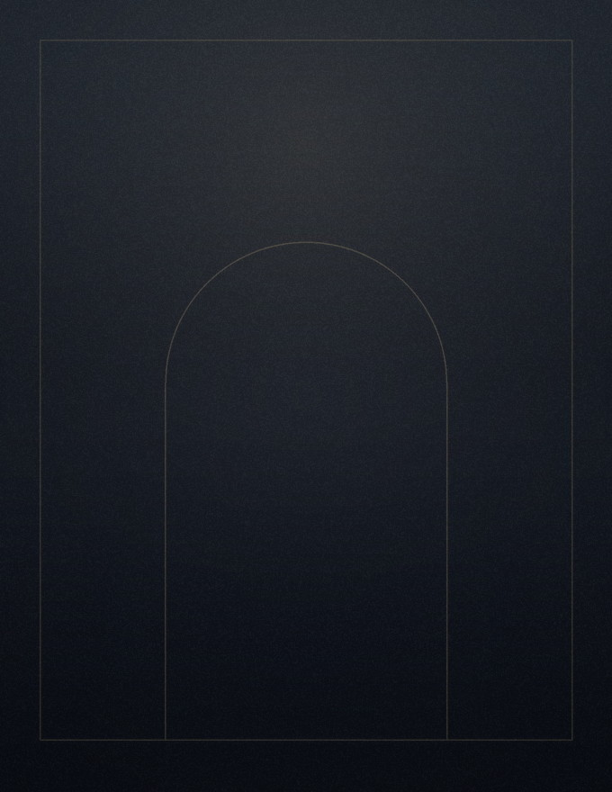

Mentoría Estratégica · Plan de Trayectoria y Vida · Un año, una persona
La expresión más personal de mi obra. Quiero que cada persona que termine una conversación conmigo se marche con una profunda sensación de serenidad, claridad y confianza.

Mi manera de acompañar comienza ayudando a ordenar las ideas. Muchas veces las respuestas ya viven dentro de la persona; necesitan estructura, perspectiva y confianza para emerger. Escucho profundamente. Observo patrones. Descubro posibilidades que aún permanecen invisibles para quien tengo delante.
Ayudo a ampliar la mirada. A encontrar conexiones. A construir criterio. A convertir una intuición en un proyecto de vida. Y cuando la persona ha llegado a sus propias conclusiones —porque las conclusiones deben ser suyas—, pongo a su servicio lo que he construido durante treinta años: mi red, mi experiencia y mi capacidad de abrir puertas.
Primero la claridad; después, el impulso.
Es una experiencia de un año, de una en una: un plan de trayectoria y vida que la persona acompañada construye conmigo, con criterio, confianza y visión internacional, y que abarca la vida entera —lo profesional, lo personal, los valores, los vínculos y el legado.
Acompaño en cada cambio de etapa y de proyecto de vida: la salida del bachillerato, la salida de la universidad, la salida de un grado especializado, y cada momento en que una trayectoria decide su rumbo.
Quienes están comenzando a construir su futuro y desean hacerlo con vocación, criterio y visión internacional desde las primeras decisiones.
Quienes llevarán adelante lo que otros construyeron con sacrificio, y necesitan encontrar su propia voz dentro de un legado.
Quienes desean liderar desde su autenticidad. Conozco ese camino y quiero dejarlo más abierto de como lo encontré.
Quienes sienten que pueden aportar mucho más al mundo y desean descubrir cómo hacerlo, con la prosperidad como consecuencia del valor que aportan.
Muchas veces, una sola conversación puede cambiar el rumbo de una vida.
Por invitación.